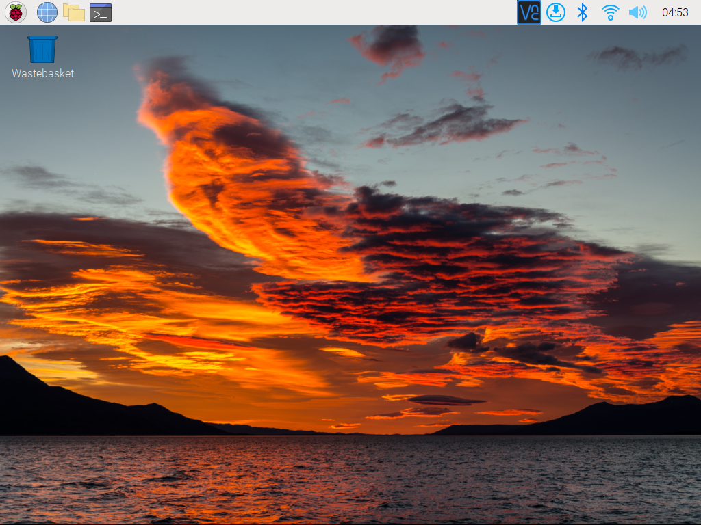

Nota
¡Hola, bienvenido a la comunidad de entusiastas de SunFounder Raspberry Pi, Arduino y ESP32 en Facebook! Sumérgete más profundamente en Raspberry Pi, Arduino y ESP32 con otros entusiastas.
¿Por qué unirse?
Soporte experto: Resuelve problemas postventa y desafíos técnicos con la ayuda de nuestra comunidad y equipo.
Aprende y comparte: Intercambia consejos y tutoriales para mejorar tus habilidades.
Vistas previas exclusivas: Obtén acceso anticipado a anuncios de nuevos productos y avances.
Descuentos especiales: Disfruta de descuentos exclusivos en nuestros productos más recientes.
Promociones festivas y sorteos: Participa en sorteos y promociones de temporada.
üëâ ¬øListo para explorar y crear con nosotros? Haz clic en [Aqu√≠] y únete hoy mismo!
Configuración de tu Raspberry Pi
Configuración con Pantalla
Tener una pantalla simplifica el proceso de trabajar con tu Raspberry Pi.
Componentes Necesarios
Raspberry Pi
Adaptador de corriente
Tarjeta Micro SD
Adaptador de corriente para la pantalla
Cable HDMI
Pantalla
Ratón
Teclado
Pasos:
Conecta el ratón y el teclado a la Raspberry Pi.
Usa el cable HDMI para conectar la pantalla al puerto HDMI de la Raspberry Pi. Asegúrate de que la pantalla esté conectada a una fuente de alimentación y encendida.
Alimenta la Raspberry Pi usando el adaptador de corriente. El escritorio del sistema operativo Raspberry Pi debería aparecer en la pantalla después de unos segundos.

Configuración sin Pantalla
Si no tienes un monitor, el inicio de sesión remoto es una opción viable.
Componentes Necesarios
Raspberry Pi
Adaptador de corriente
Tarjeta Micro SD
Usando SSH, puedes acceder a la shell Bash de la Raspberry Pi, que es la shell predeterminada de Linux. Bash ofrece una interfaz de línea de comandos para realizar varias tareas.
Para aquellos que prefieren una interfaz gráfica de usuario (GUI), la función de escritorio remoto es una alternativa conveniente para gestionar archivos y operaciones.
Para tutoriales detallados de configuración basados en tu sistema operativo, consulta las siguientes secciones: